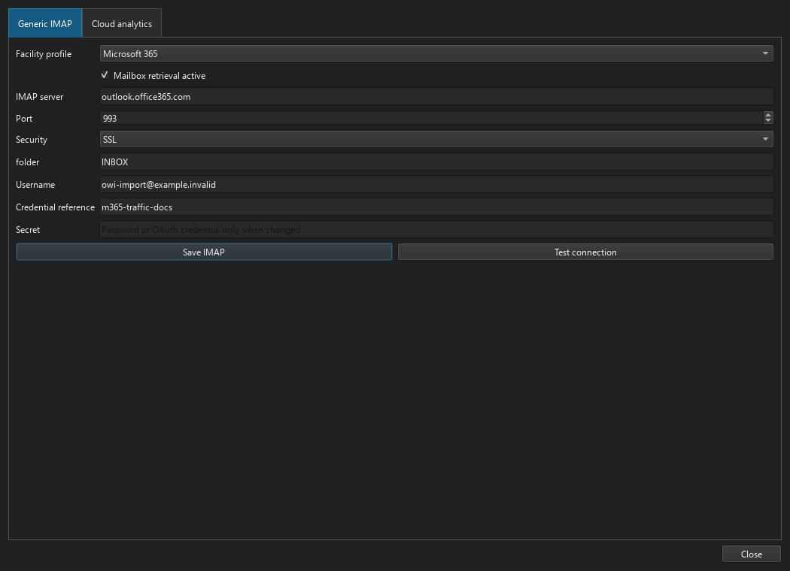
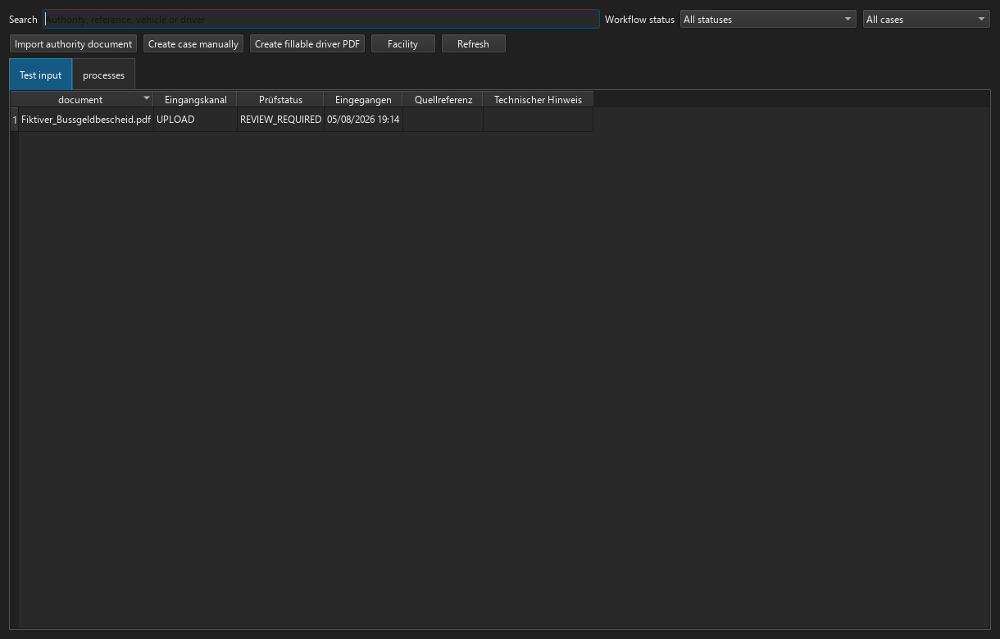
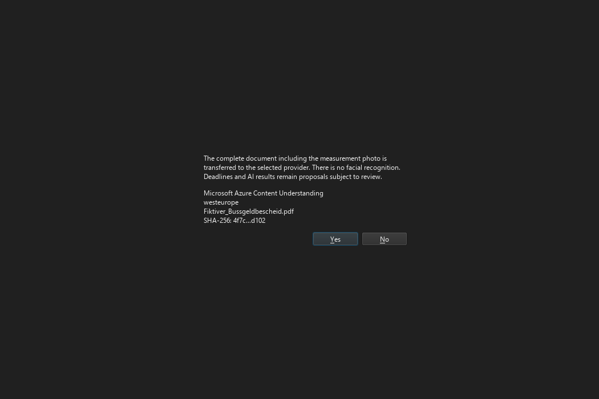
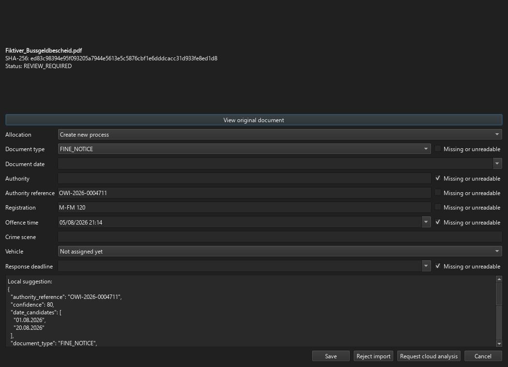
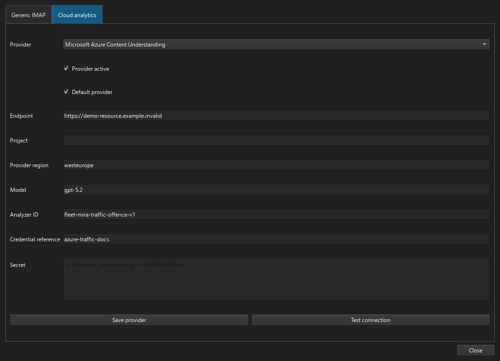
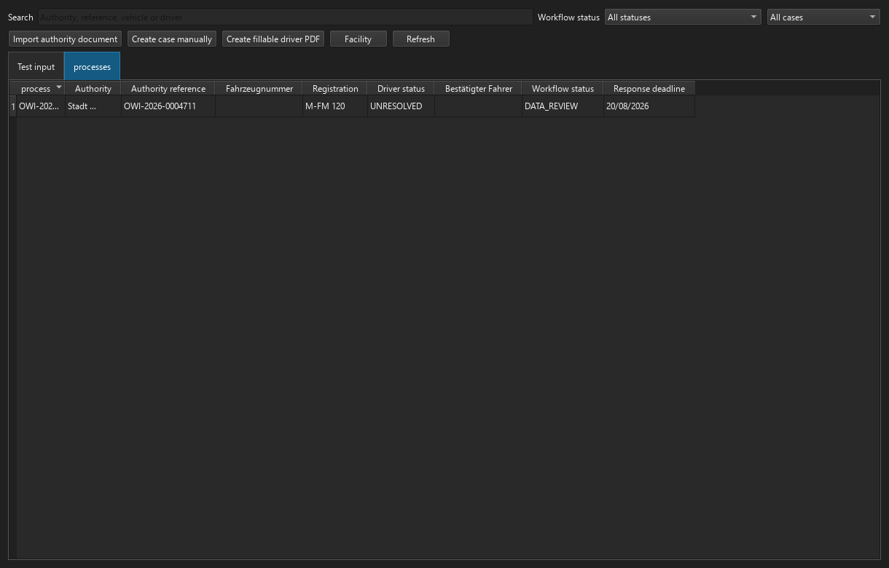

Administering traffic-offence management¶
This guide is intended for FLEET Mira administrators. The module is available in Pro and Enterprise through fleet.traffic_offences. OCR and AI results are review-only suggestions; no document is sent to a cloud provider without explicit consent by an authorised user.
Version 1 uses generic IMAP only. POP3, JMAP, Microsoft Graph Mail API and Gmail API are not implemented; future adapters can extend the protocol-neutral MailboxSourceAdapter. Microsoft 365 Copilot is not an import or extraction engine. Local upload, watched folder and OCR work without any mail or cloud provider.
1. Prerequisites, licence and permissions¶
- Enable the Pro or Enterprise licence feature
fleet.traffic_offences. - Assign
traffic_offences.import,traffic_offences.review_import,traffic_offences.cloud_analyze,traffic_offences.manageandtraffic_offences.readas required. - Restrict
settings.manageto administrators. Basic does not display the module. - Verify the user profile's region; date and date-time pickers use it independently of UI language.
2. Document archive, backup and retention¶
Verify the document archive and backup target under Administration → Settings. An imported original is stored once as TRAFFIC_OFFENCE_IMPORT_ITEM, unchanged and SHA-256 protected. Once confirmed, the case document references the same archive object. Back up and restore the database and document archive together. Agree retention, legal hold and deletion approval with privacy and legal stakeholders.
3. Local OCR and watched folder¶
- Install Tesseract with
deuandenglanguage packs and Poppler (pdftoppm) on the worker host. - Configure the dedicated watched folder under Administration → Traffic offences.
- Grant the Pro user or Enterprise service identity only the required folder and FLEET Mira data-root permissions.
- Test a text PDF, scan PDF and rotated image. Each must appear in the Review inbox.
Text PDFs are read directly; scans and images are handled locally. Missing deadlines are never inferred. Without an enabled cloud provider, successful local analysis proceeds directly to REVIEW_REQUIRED.
4. Generic IMAP¶
All providers use GenericImapMailboxSource. FLEET Mira opens the configured folder read-only, uses BODY.PEEK[] and never issues STORE, MOVE, COPY or DELETE.
- Create a mailbox dedicated to authority documents and driver replies.
- Open Administration → Traffic offences → Generic IMAP.
- Select a profile or Other and verify host, port,
SSL/STARTTLS, folder and full username. - Set a unique credential reference. Secrets are held in the Pro user's DPAPI store or the FleetMiraWorker service account's machine DPAPI store, never in SQLite/PostgreSQL.
- Save and run Test connection. It verifies TLS, authentication, capabilities, read-only folder access and UIDVALIDITY.
Unencrypted connections are rejected. Mailbox ID, UIDVALIDITY, UID, Message-ID and raw-mail/attachment hashes prevent duplicates.
5. Microsoft 365 OAuth¶
Preset: outlook.office365.com, port 993, SSL/TLS, XOAUTH2.
- Register an Entra application. Pro uses delegated
IMAP.AccessAsUser.Allandoffline_access; Enterprise uses applicationIMAP.AccessAsAppwith admin consent. - For Enterprise, register the service principal in Exchange Online and limit mailbox access with an Application Access Policy.
- Provision client ID and refresh token (and client secret where required) for Pro; provision tenant ID, client ID and client secret in the machine worker store for Enterprise.
- Save and test. Username/password and app passwords are not offered for Microsoft 365.
Reference: Microsoft: authenticate IMAP/POP/SMTP using OAuth.
6. Google Workspace OAuth¶
Preset: imap.gmail.com, port 993, SSL/TLS, XOAUTH2.
- Enable IMAP according to Workspace policy and create an OAuth client for Pro or service account for Enterprise.
- Pro provisions client ID and refresh token. Enterprise enables domain-wide delegation, grants only
https://mail.google.com/, and provisions service-account JSON plus the delegated mailbox user on FleetMiraWorker. - Enter the full mail address and credential reference, save and test.
Reference: Google: XOAUTH2 for IMAP.
7. Hetzner and other providers¶
For Hetzner use mail.your-server.de, port 993, SSL/TLS, the full email address and mailbox password. Other providers allow configurable host, port, encryption, folder and PASSWORD/XOAUTH2. STARTTLS is accepted; plaintext IMAP is not. See Hetzner email setup and RFC 9051 (IMAP4rev2).
8. Azure Content Understanding¶
- Create an Azure AI resource in the approved region and record its endpoint and API key or Entra credential.
- Under Administration → AI connector, select
AZURE_CONTENT_UNDERSTANDINGand enter endpoint, region, model and analyzer IDfleet-mira-traffic-offence-v1. - Provision the secret. Enterprise stores only its credential reference in PostgreSQL.
- Test connection creates/updates and reads the versioned analyzer.
References: Analyzer reference, REST quickstart.
9. Gemini through Vertex AI¶
- Open Administration → AI connector, select Google Gemini through Vertex AI, then start Google Vertex setup wizard….
- The wizard explains where to find the project ID in the Google Cloud project selector under Project information. Select a customer-owned project with billing enabled and activate the Vertex AI API; direct links to the Google Cloud Console and API page are included.
- Under IAM & Admin → Service Accounts, create a service account with
roles/aiplatform.useror a narrower custom role. Create a JSON key under Keys. - In Pro, select the unmodified JSON file or drop it onto the field. FLEET Mira validates and protects its contents, does not display the private key and does not persist the source file path. For Enterprise, provision the JSON only on FleetMiraWorker.
- The credential reference is not supplied by Google. It is a freely assigned stable FLEET Mira reference containing no password or key; the wizard suggests
vertex-traffic-offences-prod. - The wizard suggests
europe-west4andgemini-2.5-flash. Both remain editable because regional availability and model lifecycles can change. - Review the summary and let the wizard test the connection after saving. Structured Output uses the FLEET Mira JSON schema; grounding, Google Search, session continuation and optional storage remain disabled.
Reference: Vertex AI Generative AI quickstart.
10. Consent and review inbox¶
For IMAP imports, the review inbox displays the sender email address extracted from the From header. Existing imports are backfilled from the unchanged archived raw message during the schema update.
After local analysis, the review form transfers recognized values directly into the domain fields. Users are not shown a technical JSON raw view of local or cloud suggestions; analysis results and source evidence remain available internally in the analysis history. Review, workflow and driver statuses as well as document types are shown as understandable domain labels in the signed-in user's language; stable technical codes remain internal only. A selected review item can be reopened with Edit or by double-clicking it. Before every cloud job the user confirms full-document transfer and the stated processing conditions. The consent dialog does not repeat the file name, SHA-256 or provider region; these remain traceable in configuration, the document archive and the analysis history. Cloud analysis then runs asynchronously with a progress indicator; on success, the open review dialog and inbox are refreshed and a completion message is shown. Provider or worker failures produce a visible error notice and remain attached to the import item as a technical notice. Failure never switches provider. Every form field is mandatory before saving; there are no absent or unreadable-data exceptions. When the initially empty response deadline picker is first clicked, it is prefilled with the current date. Similar authority references must still be linked manually.
11. HTTPS driver portal¶
Open Administration → Traffic offences → Driver portal and enter the public HTTPS base URL, TLS certificate path and a freely assigned stable credential reference. The reference is not a secret; it only points to the protected record containing the private key, session secret and optional key password. Pro can protect these values from the UI with user-scoped DPAPI. In Enterprise they are provisioned only on FleetMiraWorker under the same reference, protected for the machine and never stored in PostgreSQL.
Publish the portal only through HTTPS on the approved LAN/VPN. Test one-time token expiry, upload limits and access from the intended network. Tokens are stored only as hashes. Restart the worker after changing the certificate or key.
12. SMTP and daily report¶
Configure/test SMTP and the FLEET_MANAGER TO/CC recipients. Driver requests are delivered through the traffic_offence_driver_notification worker job. With a disposable case, verify that the status changes to “Driver response pending” only after SMTP succeeds, that raw message and PDF appear in the case file, and that a failure remains visible as FAILED. In Enterprise, the client may only enqueue delivery; FleetMiraWorker performs it.
Preview, manual send and automatic run of the daily report must show the same four sections. Failed driver requests are technical delivery errors. Addresses, free text, offence details, document contents and attachments must never appear in the email.
13. Pro end-to-end acceptance¶
Import one item by upload, folder and IMAP. Verify hash deduplication, local OCR, one explicitly consented cloud analysis, evidence, regional date controls, case/deadline, driver calculation, report and 2×2 widget. Verify SQLite, in-process worker and user-scoped DPAPI.
14. Enterprise end-to-end acceptance¶
Use a disposable PostgreSQL database. Enterprise Client must only enqueue jobs; IMAP, OCR, provider calls and driver calculation run in FleetMiraWorker. Verify credential references, machine-scoped secret store, leases/idempotency, retry after restart and installed UI scenarios.
15. Troubleshooting, rotation and offboarding¶
- Local OCR
FAILED: verify Tesseract/Poppler, file permissions and format. - IMAP: verify TLS chain, OAuth scopes/consent, mailbox policy, UIDVALIDITY and clock.
- Azure/Vertex: verify region, endpoint/project, role and model/analyzer; never copy document content into tickets or logs.
- Rotate by provisioning the new secret under the same reference, testing it, then revoking the old credential.
- During offboarding disable polling/providers, revoke tokens/keys, remove local/machine secrets and retain the audit record.
Reproducible FLEET Mira screenshots use stable widget IDs trafficOffenceSettingsPanel, trafficOffenceSettingsTabs, trafficOffenceImportInbox, trafficOffenceImportReviewDialog and trafficOffenceReviewOccurredAt. Cloud portals are intentionally not pictured.
Reproducible product views¶







Regenerate all views with python scripts/capture_traffic_offence_documentation.py. Its database, documents, authorities, registrations and credentials are entirely isolated documentation fixtures.